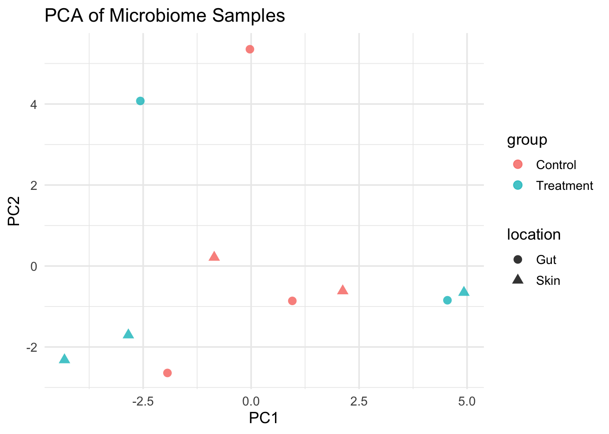

Q&A 10 How do I perform ordination (e.g., PCA) to visualize sample clustering?
10.1 Explanation
Ordination techniques like PCA, NMDS, or PCoA help reduce the complexity of high-dimensional OTU tables, making it easier to visualize sample relationships.
These methods project samples into 2D or 3D based on similarity in microbial composition. Samples that cluster together share similar community profiles.
In this example, we’ll perform PCA on centered log-ratio (CLR) transformed data — a common preprocessing step in microbiome compositional analysis.
10.2 Python Code
import pandas as pd
from sklearn.decomposition import PCA
from sklearn.preprocessing import StandardScaler
import seaborn as sns
import matplotlib.pyplot as plt
# Load OTU and metadata
otu_df = pd.read_csv("data/otu_table_filtered.tsv", sep="\t", index_col=0).T
meta_df = pd.read_csv("data/sample_metadata.tsv", sep="\t")
# Replace 0s with pseudocount for log transformation
otu_df += 1
otu_log = np.log(otu_df)
# Standardize (optional)
otu_scaled = StandardScaler().fit_transform(otu_log)
# PCA
pca = PCA(n_components=2)
pca_result = pca.fit_transform(otu_scaled)
pca_df = pd.DataFrame(pca_result, columns=["PC1", "PC2"])
pca_df["sample_id"] = otu_df.index
# Merge with metadata
pca_df = pd.merge(pca_df, meta_df, on="sample_id")
# Plot
plt.figure(figsize=(8, 6))
sns.scatterplot(data=pca_df, x="PC1", y="PC2", hue="group", style="location", s=100)
plt.title("PCA of Microbiome Samples")
plt.xlabel(f"PC1 ({pca.explained_variance_ratio_[0]:.2%})")
plt.ylabel(f"PC2 ({pca.explained_variance_ratio_[1]:.2%})")
plt.tight_layout()
plt.show()10.3 R Code
library(tidyverse)
library(vegan)
otu_df <- read.delim("data/otu_table_filtered.tsv", row.names = 1)
meta_df <- read.delim("data/sample_metadata.tsv")
# CLR transformation (log + pseudocount)
otu_clr <- log(otu_df + 1)
otu_scaled <- scale(t(otu_clr)) # samples as rows
# PCA
pca_res <- prcomp(otu_scaled, center = TRUE, scale. = TRUE)
pca_df <- as.data.frame(pca_res$x[, 1:2])
pca_df$sample_id <- rownames(pca_df)
# Merge
merged <- left_join(pca_df, meta_df, by = "sample_id")
# Plot
ggplot(merged, aes(x = PC1, y = PC2, color = group, shape = location)) +
geom_point(size = 3, alpha = 0.8) +
theme_minimal(base_size = 13) +
labs(title = "PCA of Microbiome Samples", x = "PC1", y = "PC2")